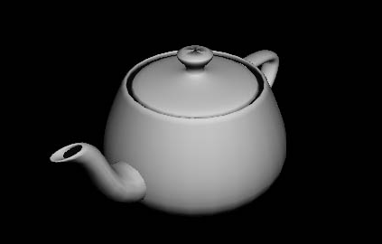
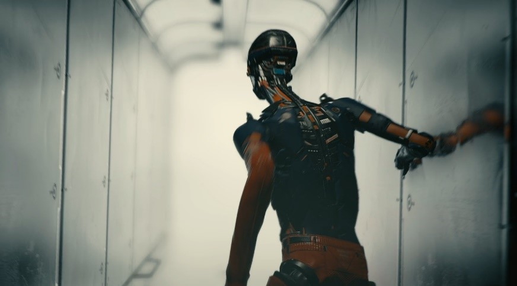

はじめに
シェーダーほど、初心者が学習しづらい技術も無いと思います。シェーダーを理解するには、そもそもシェーダーという技術が無かった頃の話から始めなければなりません。
（※なお、以下の歴史の説明には、細かい部分で誤りがある可能性があります。雰囲気で読んでください。）
なんとこの頃から既に3Dゲームは存在しました。でもまだまだ簡素なものでした。

https://www.youtube.com/watch?v=IqE14T3hf7Y
これは1983年製、ATARI社の「STAR WARS」というゲームです。一度に表示する頂点数は多く見積もっても100個ほどでしょうか？
また、全てが直線で表現されており、面はありません。この程度の計算なら、当時のCPUでも処理できたようです。
ってか、西洋人はホント3D好きだな…
3Dの描画をリアルにするためには、もっと頂点数を増やさなければなりません。また、線だけではなく面を描画する必要があります。
これは1993年製、SEGAの「バーチャファイター」。今見るとショボいですが、当時としては全ゲーマーに衝撃を与えたものです。
このような画面を作るためには、数千個の頂点座標の計算と、数万ピクセルの色の決定を毎フレーム行う必要があります。
一つ一つは単純な計算（行列計算、つまり掛け算と足し算の積み重ね）ですが、回数が膨大なため、当時のCPUではとても間に合いませんでした。そのため、単純計算の並列処理が得意な3Dグラフィック専用ハードウェアが登場しました。現在のGPUの前身です（当時はまだGPUという呼称が無かった）。
前述の3Dグラフィック専用ハードウェアは「GPU」と呼ばれるようになりました。
そしてどんどん進化していきました。
それを制御するためのライブラリであるDirectXやOpenGLも登場し、GPUと共に進化していきました。

この頃は、アプリ開発者がGPUに対して直接命令を実行させることは出来ず、DirectXやOpenGLがあらかじめ用意した命令を呼ぶことでしか、GPUに描画を行わせることはできませんでした。
GPUの性能が上がるにつれて、その性能を活かした様々な新技法が考案されていきました。そしてそれらを実現するために、DirectXやOpenGLには新しい命令が次々と追加されていきました。
光沢を指定するための命令。テクスチャを使うための命令。ライトを指定するための命令。フォグに関する命令。その他諸々…
GPUの進化は止まりません。すると、問題が起き始めました。
アプリ開発者が望むあらゆる描画機能をDirectXやOpenGLといったライブラリに追加するのが難しくなってきたのです。多様な機能を実装するには手間もかかるし、追加したとしてもライブラリが肥大化してしまう。
そこで、「ライブラリ側が描画命令を提供することはやめ、アプリ開発者に命令を書いてもらおう」ということになりました。
そのためにアプリ開発者が記述するプログラムが「プログラマブルシェーダー」、いわゆる「シェーダー」です。
シェーダーの登場により、アプリ開発者の手間は増えましたが、自由度は飛躍的に向上しました。発想次第で、様々な表現が可能となりました。
シェーダーが使用可能となった最初の家庭用ゲーム機はXboxです。PlayStationにおいては3から使用可能になりました。

今日の極めてリアルなゲーム画面は、シェーダーのたまものです。
なお、シェーダー登場以前の、ライブラリが提供していた命令群のことは、区別のために「固定機能」と呼ばれます。当時のシェーダーの役割は2つです。
それぞれを行うシェーダープログラムを、「頂点シェーダー」、「フラグメントシェーダー」と呼びます。
（ピクセルの色を計算するシェーダーのことを、OpenGLは「フラグメントシェーダー」、DirectXは「ピクセルシェーダー」と呼んでいます（勘弁してくれ）。
Unityも「フラグメントシェーダー」と呼んでいるため、この授業では「フラグメントシェーダー」と呼んでいきます）
DirextX10、11、12が登場し、上述の頂点シェーダーとフラグメントシェーダーに加え、いくつものシェーダーが追加されました（ジオメトリシェーダー、テッセレーターなど）。
これらにより、さらに高度で多彩な表現が可能となりました。
※ただ、ジオメトリシェーダーはたまに使う、テッセレーターはほとんど使われていない、といったレベルです。今でも「シェーダーを書く」と言った場合はほとんど「頂点シェーダーとフラグメントシェーダーを書くこと」を指します。
「物理ベースレンダリング」という描画手法が流行り始めました（そして今では当たり前のものとなっています）。
従来、物体表面の色や光沢を決める計算は、物理法則を無視したものでした。簡単な計算で、なるべくそれっぽい絵が出れば良い、というものでした。
しかし、物理ベースレンダリングでは、物理法則（物体表面における光の反射や吸収）をある程度現実に基づいて計算します。
そのため、リアルな描画結果が得られるというものです。（現実に基づいているので、現実のパラメーターを真似すればリアルな描画結果になる、そのため、試行錯誤の必要が無い、誰がやっても安定して高品質な見た目になる、といった利点もあります。これは近年の大規模開発に有利です）
物理ベースレンダリングは、もちろん従来の手法よりも描画負荷は高いのですが、GPUの進化により、現実的なものとなりました。
（モバイル（スマホ）ではまだ一般的ではありませんが、一般的になるのも時間の問題でしょう）
従来は処理負荷の観点で実現できなかったリアルタイムレイトレーシングが行えるようになりました。

https://www.youtube.com/watch?v=lMSuGoYcT3s
この映像がリアルタイムレンダリング…すげえ…
2020年現在、リアルタイムレイトレーシングを使ったゲームはまだそれほど多くはありませんが、今後、AAAタイトルなどではどんどん使われるようになっていくことでしょう。
CGアニメーション制作のリアルタイムレンダリング化も進むかもしれません。